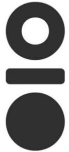

Trade Mark Journal No.2025/033 15 August 2025
WO0000001856036 (21,35)
Office of origin: Malaysia
Date of International Registration:28 January 2025
Date of designation in the UK:
28 January 2025

International priority date claimed: 13 September 2024
(Malaysia)
- Class 21
- Bottles; water bottles; glass bottles; shaker bottles sold empty; porcelain bottle; ceramic bottle; reusable stainless steel water bottles; stainless steel straw; aluminium water bottles; water bottles sold empty; water bottles for bicycles; drinking bottles for sports; tumblers; tumblers [drinking glasses]; porcelain tumbler; ceramic tumbler; flasks; vacuum flasks; insulated flasks; insulating flasks; thermally insulated flasks for household use; drinking flasks; drinking flasks for travellers; mugs; insulated mugs; insulated travel mugs; drinking mugs; drinking glasses; coffee mugs; coffee travel mugs; coffee cups; porcelain cup; ceramic cup; tea infusers; glass lids; cup lids; boxes for sweets; candy boxes; lunch boxes; insulated lunch bags; insulated vacuum bottles; heat-insulated containers; household containers for foods; heat-insulated containers for beverages; thermally insulated containers for food or beverages; drinking bottle for sports; drinking vessels; drinking straws; insulated bottles; vacuum bottles; refrigerating bottles; plastic cups; pouring spouts; kitchen containers; reusable silicone food covers; reusable silicone food covers for bowls, pots, pans and cups; reusable silicone lids for bowls, pots, pans and cups; cups; baby baths; plates; place mats, not of paper or textile; brushes; bowls; fruit bowls; kids drinking cups; bento boxes; lids for cups and glasses; utensils for household purposes; insulated bags for food or beverages, for domestic use; insulated bags for food or beverages, for household purposes; utensils and containers for household and kitchen use; portable plastic containers for household and kitchen use; cookware and tableware, except forks, knives and spoons; containers for household or kitchen use; silicone bowls; silicone plates; kitchen utensils of silicone; cups with spouts for babies and children; sippy cups.
- Class 35
- Retail services for cookware; wholesale services for cookware; online retail store services in relation to cookware; online wholesale store services in relation to cookware; retail services relating to food cooking equipment; wholesale services relating to food cooking equipment; online retail store services in relation to food cooking equipment; online wholesale store services in relation to food cooking equipment; retail services or wholesale services for paper and stationery; online retail store services in relation to stationery supplies; online wholesale store services in relation to stationery supplies; retail and wholesale services for luggage, bags, wallets and all-purpose carrying bags; retail services for tableware; wholesale services for tableware; online retail store services in relation to tableware; online wholesale store services in relation to tableware; retail and wholesale services for household or kitchen utensils and containers; retail and wholesale services for glasses, drinking vessels and barware; retail services provided by means of mail order catalogues connected with the sale of “retail services provided by means of mail order catalogues connected with the sale of boxes for pens, pen cases, pencil boxes, writing cases [stationery], wrapping, packaging and storage bags, notebooks, writing books, drawing books, colouring books, protective covers for books, cases for stamps [seals], balls for ball point pens, drawing pens, fountain pens, marking pens, pens, steel pens, stands for pens, stands for pencils, erasers, erasing products, stickers, drawing rulers, square rulers for drawing, pencil sharpeners, pencil sharpening machines, electric or non-electric, covers [stationery], wrappers [stationery], drawing pads, inking pads, padding materials of paper or cardboard, stamp pads, pencil holders, pencil lead holders, ring binders, highlighter pens, novelty pen, notepads, scissors, notebook drawing pads, mats [coasters] of card or cardboard, bibs of paper, backpacks, bags, reusable shopping bags, school bags, school satchels, suitcases with wheels, wheeled shopping bags, pocket wallets, wallet chains, smart suitcase, motorised suitcases, suitcases, suitcase handles, credit card cases (wallets), camera cases, purses, luggage tags, all-purpose carrying bags, bottles, water bottles, glass bottles, shaker bottles sold empty, porcelain bottle, ceramic bottle, reusable stainless steel water bottles, stainless steel straw, aluminium water bottles, water bottles sold empty, water bottles for bicycles, drinking bottles for sports, tumblers, tumblers [drinking glasses], porcelain tumbler, ceramic tumbler, flasks, vacuum flasks, insulated flasks, insulating flasks, thermally insulated flasks for household use, drinking flasks, drinking flasks for travellers, mugs, insulated mugs, insulated travel mugs, drinking mugs, drinking glasses, coffee mugs, coffee travel mugs, coffee cups, porcelain cup, ceramic cup, tea infusers, glass lids, cup lids, boxes for sweets, candy boxes, lunch boxes, insulated lunch bags, insulated vacuum bottles, heat-insulated containers, household containers for foods, heat-insulated containers for beverages, thermally insulated containers for food or beverages, drinking bottle for sports, drinking vessels, drinking straws, insulated bottles, vacuum bottles, refrigerating bottles, plastic cups, pouring spouts, kitchen containers, reusable silicone food covers, reusable silicone food covers for bowls, pots, pans and cups, reusable silicone lids for bowls, pots, pans and cups, cups, baby baths, plates, place mats, not of paper or textile, brushes, bowls, fruit bowls, kids drinking cups, bento boxes, lids for cups and glasses, utensils for household purposes, insulated bags for food or beverages, for domes c use, insulated bags for food or beverages, for household purposes, utensils and containers for household and kitchen use, portable plastic containers for household and kitchen use, cookware and tableware, except forks, knives and spoons, containers for household or kitchen use, silicone bowls, silicone plates, kitchen utensils of silicone, cups with spouts for babies and children, sippy cups; retail and wholesale store services, including online retail and wholesale store services, all in relation to boxes for pens, pen cases, pencil boxes, writing cases [stationery], wrapping, packaging and storage bags, notebooks, writing books, drawing books, colouring books, protective covers for books, cases for stamps [seals], balls for ball point pens, drawing pens, fountain pens, marking pens, pens, steel pens, stands for pens, stands for pencils, erasers, erasing products, stickers, drawing rulers, square rulers for drawing, pencil sharpeners, pencil sharpening machines, electric or non-electric, covers [stationery], wrappers [stationery], drawing pads, inking pads, padding materials of paper or cardboard, stamp pads, pencil holders, pencil lead holders, ring binders, highlighter pens, novelty pen, notepads, scissors, notebook drawing pads, mats [coasters] of card or cardboard, bibs of paper, backpacks, bags, reusable shopping bags, school bags, school satchels, suitcases with wheels, wheeled shopping bags, pocket wallets, wallet chains, smart suitcase, motorised suitcases, suitcases, suitcase handles, credit card cases (wallets), camera cases, purses, luggage tags, all-purpose carrying bags, bottles, water bottles, glass bottles, shaker bottles sold empty, porcelain bottle, ceramic bottle, reusable stainless steel water bottles, stainless steel straw, aluminium water bottles, water bottles sold empty, water bottles for bicycles, drinking bottles for sports, tumblers, tumblers [drinking glasses], porcelain tumbler, ceramic tumbler, flasks, vacuum flasks, insulated flasks, insulating flasks, thermally insulated flasks for household use, drinking flasks, drinking flasks for travellers, mugs, insulated mugs, insulated travel mugs, drinking mugs, drinking glasses, coffee mugs, coffee travel mugs, coffee cups, porcelain cup, ceramic cup, tea infusers, glass lids, cup lids, boxes for sweets, candy boxes, lunch boxes, insulated lunch bags, insulated vacuum bottles, heat-insulated containers, household containers for foods, heat-insulated containers for beverages, thermally insulated containers for food or beverages, drinking bottle for sports, drinking vessels, drinking straws, insulated bottles, vacuum bottles, refrigerating bottles, plastic cups, pouring spouts, kitchen containers, reusable silicone food covers, reusable silicone food covers for bowls, pots, pans and cups, reusable silicone lids for bowls, pots, pans and cups, cups, baby baths, plates, place mats, not of paper or textile, brushes, bowls, fruit bowls, kids drinking cups, bento boxes, lids for cups and glasses, utensils for household purposes, insulated bags for food or beverages, for domestic use, insulated bags for food or beverages, for household purposes, utensils and containers for household and kitchen use, portable plastic containers for household and kitchen use, cookware and tableware, except forks, knives and spoons, containers for household or kitchen use, silicone bowls, silicone plates, kitchen utensils of silicone, cups with spouts for babies and children, sippy cups; providing customer loyalty programs for promotional purposes; administration of customer loyalty and incentive schemes; advertising via the internet; dissemination of advertising and promotional materials; demonstration of goods and services by electronic means; presentation of products to the public; promoting the goods and services of others via a global computer network; organisation and conducting of product presentations; marketing; online marketing; digital marketing; social media marketing; providing information and advice to consumers regarding the selection of products and items to be purchased; business management and administration; advertising of business websites; business management of retail outlets; providing business information via a website.
RPG Commerce Holdings Pte. Ltd.
Representative: Boult Wade Tennant LLP, Salisbury Square House, 8 Salisbury Square London EC4Y 8AP UNITED KINGDOM